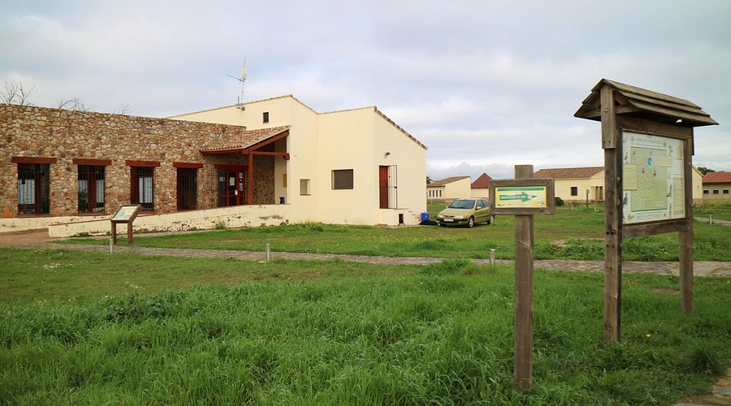

PARAJES NATURALES
Entre los parajes naturales cercanos a Navalvillar se encuentra la Sierra de Pela, catalogada como Zona Especial de Protección de Aves (ZEPA).
Otros lugares llenos de encanto son el Valle Postrero, el Arroyo de la Sierra, el Chorrero, las Tres Cruces y las Cuevas de Villavieja.
Por otra parte, la localidad está rodeada por ocho pantanos: García Sola, La Serena, Orellana, Sierra Brava, Zújar, Ruecas, Gargáligas y Cubilar. Por ello, la población se encuentra en un lugar estratégico para practicar la pesca.